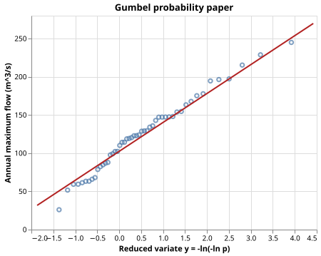

Flood Frequency Analysis
31.1 The Problem
- Infrastructure such must be designed to withstand rare but extreme floods
- Engineers specify design events by return period: the average number of years between events that exceed a given magnitude
- A 100-year flood does not occur once per century on a schedule: it has a 1% probability of being exceeded in any given year
- Estimating these probabilities from historical records by fitting a statistical distribution to the annual maximum flows
31.2 The Log-Normal Distribution
- Annual maximum flows are positive and right-skewed, so a log-normal distribution is a natural starting point
- A random variable \(X\) is log-normally distributed if \(Y = \ln X\) follows a normal distribution
- The log-normal distribution is characterised by two parameters:
- \(\mu_y\) (the mean of \(\ln X\))
- \(\sigma_y > 0\) (the standard deviation of \(\ln X\))
- If \(\Phi\) is the standard normal CDF, the log-normal’s cumulative distribution function is:
\[F(x) = \Phi\!\left(\frac{\ln x - \mu_y}{\sigma_y}\right), \quad x > 0\]
A dataset of 50 annual maximum flows has sample mean log-flow \(\bar{y} = 4.80\) and sample standard deviation of log-flows \(s_y = 0.40\). Using the log-normal model, what is \(\hat{\mu}_y\)?
- 4.80
- Correct: the method-of-moments estimate of \(\mu_y\) is simply the sample mean of the log-flows.
- 0.40
- Wrong: 0.40 is \(s_y\), the estimate of \(\sigma_y\), not of \(\mu_y\).
- \(e^{4.80} \approx 121\)
- Wrong: exponentiating \(\bar{y}\) gives the estimated median flow in m^3/s, not the log-mean parameter.
- \(4.80 / 0.40 = 12\)
- Wrong: dividing the log-mean by the log-standard-deviation has no statistical interpretation here.
31.3 Generating Synthetic Data
- We draw 50 years of annual maximum flows from a known log-normal distribution so that we can verify our estimator
- Drawing \(Y \sim \text{Normal}(\mu_y, \sigma_y)\) and setting \(X = e^Y\) gives \(X \sim \text{LogNormal}(\mu_y, \sigma_y)\)
# True log-normal parameters used to generate the synthetic flow record.
# Annual maximum flows X are modelled as log-normal: ln(X) ~ Normal(mu_y, sigma_y).
# With TRUE_MU_LOG = 4.8 and TRUE_SIGMA_LOG = 0.4 the median flow is
# exp(4.8) ~ 121 m^3/s and the geometric coefficient of variation is
# exp(0.4) - 1 ~ 49%, giving realistic variability for a mid-size river.
TRUE_MU_LOG = 4.8 # mean of log-flows (dimensionless, logs of m^3/s)
TRUE_SIGMA_LOG = 0.4 # standard deviation of log-flows (dimensionless)
N_YEARS = 50 # years of annual maximum flow recorddef generate(mu_log=TRUE_MU_LOG, sigma_log=TRUE_SIGMA_LOG, n=N_YEARS, seed=SEED):
"""Return a DataFrame with synthetic annual maximum flows.
Draws n values from a log-normal distribution with log-mean mu_log
and log-standard-deviation sigma_log. Equivalently, the natural
logarithms of the flows are drawn from Normal(mu_log, sigma_log).
"""
rng = np.random.default_rng(seed)
log_flows = rng.normal(loc=mu_log, scale=sigma_log, size=n)
flows = np.exp(log_flows)
return pl.DataFrame({"year": np.arange(1, n + 1), "annual_max_flow": flows})31.4 Fitting by the Method of Moments
- The method of moments sets the distribution’s theoretical moments equal to the sample moments and solves for the parameters
- For the log-normal distribution the moments of \(Y = \ln X\) are exactly \(\mu_y\) and \(\sigma_y\), so the estimates are:
\[\hat{\mu}_y = \bar{y} = \frac{1}{n}\sum_{i=1}^n \ln x_i \qquad \hat{\sigma}_y = s_y = \sqrt{\frac{1}{n-1}\sum_{i=1}^n (\ln x_i - \bar{y})^2}\]
- Here, the \(n-1\) denominator applies Bessel's correction for the sample standard deviation
# Return periods of interest (years). A T-year flood has probability
# 1/T of being exceeded in any given year.
RETURN_PERIODS = [2, 5, 10, 25, 50, 100, 200]Put these steps in the correct order for method-of-moments estimation of log-normal parameters.
- Take the natural logarithm of each annual maximum flow to get \(y_i = \ln x_i\)
- Compute \(\hat{\mu}_y = \bar{y}\), the sample mean of the log-flows
- Compute \(\hat{\sigma}_y = s_y\), the sample standard deviation of the log-flows (with \(n-1\) denominator)
- Use \(\hat{\mu}_y\) and \(\hat{\sigma}_y\) to compute return levels or plot the fitted distribution
31.5 Return Periods
- The \(T\)-year return level \(x_T\) is the flow magnitude exceeded with probability \(1/T\) in any given year.
- Setting \(F(x_T) = 1 - 1/T\) and inverting the log-normal CDF:
\[x_T = \exp\!\left(\hat{\mu}_y + z_p\, \hat{\sigma}_y\right), \quad p = 1 - \frac{1}{T}\]
- Here, \(z_p = \Phi^{-1}(p)\) is the standard normal quantile at probability \(p\), computed with
scipy.stats.norm.ppf.
A community’s flood barrier is designed for the 100-year return level. Over the next 100 years, what is the probability that the barrier is overtopped at least once?
- Exactly 1%
- Wrong: 1% is the probability of exceedance in a single year, not over 100 years.
- Approximately 63%
- Correct: P(at least one exceedance in 100 years) = 1 - (1 - 1/100)^100 ≈ 1 - e^{-1} ≈ 63%.
- Exactly 100%
- Wrong: the return period is an average; exceedance is a random event, not guaranteed over any finite horizon.
- Exactly 50%
- Wrong: the return period T such that P(at least one exceedance in T years) = 0.5 is T ≈ 69 years, not 100.
31.6 Normal Probability Plot
- Plotting data on a normal probability plot (Q-Q plot) provides a visual check on whether the log-normal distribution fits
- The Weibull plotting position \(p_i = i/(n+1)\) assigns a non-exceedance probability to each ranked observation without assuming a specific distribution
- The theoretical normal quantile \(z_i = \Phi^{-1}(p_i)\) linearises the log-normal CDF: if \(\ln X\) is normally distributed, plotting \((z_i, \ln x_{(i)})\) gives a straight line
def plot(flows, mu_y, sigma_y):
"""Return an Altair normal probability plot (Q-Q plot) for log-flows.
Points are the empirical log-flows plotted against their theoretical
normal quantiles. The line is the fitted log-normal distribution.
If the data are log-normally distributed, the points should scatter
around a straight line.
"""
z_obs, log_obs = plotting_positions(flows)
z_fit = np.linspace(z_obs.min() - 0.5, z_obs.max() + 0.5, 200)
log_fit = mu_y + sigma_y * z_fit # log-normal quantile: ln x = mu_y + sigma_y * z
df_pts = pl.DataFrame({"z": z_obs, "log_flow": log_obs})
df_line = pl.DataFrame({"z": z_fit, "log_flow": log_fit})
points = (
alt.Chart(df_pts)
.mark_point()
.encode(
x=alt.X("z:Q", title="Standard normal quantile z"),
y=alt.Y("log_flow:Q", title="ln(annual maximum flow)"),
)
)
line = (
alt.Chart(df_line)
.mark_line(color="firebrick")
.encode(
x=alt.X("z:Q"),
y=alt.Y("log_flow:Q"),
)
)
return (points + line).properties(
width=400, height=300, title="Normal probability plot of log-flows"
)
31.7 Testing
- Parameter recovery on a large sample
- With \(n = 10\,000\) the central-limit theorem says that the standard error of \(\hat{\mu}_y\) is roughly \(\sigma_y / \sqrt{n} \approx 0.004\), well under 1%
- A relative tolerance of 5% gives a safety factor of \(\sim 50\) over the expected sampling error
- Monotone return levels
- The log-normal quantile \(x_T = \exp(\mu_y + z_p \sigma_y)\) is strictly increasing in \(T\) because \(\sigma_y > 0\) and \(z_p = \Phi^{-1}(1 - 1/T)\) is strictly increasing in \(T\)
- Any violation would indicate an error in the formula or the sign conventions
- Algebraic consistency
- \(F(x_T) = 1 - 1/T\) is the definition of the return level
- it must hold to numerical precision (\(< 10^{-10}\))
- Valid plotting positions
- \(p_i = i/(n+1) \in (0,1)\) guarantees finite normal quantiles
- sorted log-flows must be non-decreasing
import numpy as np
from scipy.stats import norm
from generate_flood import TRUE_MU_LOG, TRUE_SIGMA_LOG, generate
from flood import (
fit_lognormal,
plotting_positions,
return_level,
)
# Large sample size used for parameter recovery tests. With N = 10 000 the
# standard error of the sample mean of log-flows is roughly sigma_y / sqrt(N)
# ~ 0.4 / 100 = 0.004, so a 5% relative tolerance gives a safety factor of ~50.
N_LARGE = 10_000
def test_fit_lognormal_large_sample():
# Draw a large log-normal sample and verify that the method-of-moments
# estimates are close to the true parameters.
rng = np.random.default_rng(7493418)
log_flows = rng.normal(loc=TRUE_MU_LOG, scale=TRUE_SIGMA_LOG, size=N_LARGE)
flows = np.exp(log_flows)
mu_y_hat, sigma_y_hat = fit_lognormal(flows)
assert abs(mu_y_hat - TRUE_MU_LOG) / TRUE_MU_LOG < 0.05
assert abs(sigma_y_hat - TRUE_SIGMA_LOG) / TRUE_SIGMA_LOG < 0.05
def test_return_levels_increase_with_period():
# A T-year flood is rarer and more extreme than a shorter-period flood,
# so return levels must be strictly increasing in T. The log-normal quantile
# x_T = exp(mu_y + z_p * sigma_y) is strictly increasing in T because
# sigma_y > 0 and norm.ppf(1 - 1/T) is strictly increasing in T.
flows = generate()["annual_max_flow"].to_numpy()
mu_y, sigma_y = fit_lognormal(flows)
levels = [return_level(mu_y, sigma_y, T) for T in [2, 10, 50, 100, 500]]
assert all(levels[i] < levels[i + 1] for i in range(len(levels) - 1))
def test_return_level_probability():
# By construction, x_T satisfies F(x_T) = 1 - 1/T under the log-normal CDF.
# This is an algebraic identity; the residual should be below 1e-10.
mu_y, sigma_y = 4.8, 0.4
T = 100
x_T = return_level(mu_y, sigma_y, T)
# Log-normal CDF: F(x) = norm.cdf((ln(x) - mu_y) / sigma_y)
p_fitted = norm.cdf((np.log(x_T) - mu_y) / sigma_y)
assert abs(p_fitted - (1.0 - 1.0 / T)) < 1e-10
def test_plotting_positions_valid():
# Weibull positions i/(n+1) lie in (0, 1), so the normal quantiles are
# always finite. Sorted log-flows must be non-decreasing.
flows = generate()["annual_max_flow"].to_numpy()
z, log_q = plotting_positions(flows)
assert np.isfinite(z).all(), "normal quantiles contain infinite values"
assert (np.diff(log_q) >= 0).all(), "log-flows are not sorted ascending"31.8 Exercises
31.8.1 Do the math
Using \(\hat{\mu}_y = 4.80\) and \(\hat{\sigma}_y = 0.40\), the standard normal quantile at \(p = 0.99\) is \(z_{0.99} \approx 2.3263\). Compute the 100-year return level \(x_{100} = \exp(4.80 + 2.3263 \times 0.40)\). Give your answer in m^3/s, rounded to one decimal place.
31.8.2 Confidence intervals by bootstrap
Estimate 95% confidence intervals for the 100-year return level using the bootstrap: draw 1000 samples of size 50 with replacement from the original data, fit the log-normal distribution to each, and compute the 100-year return level. Report the 2.5th and 97.5th percentiles of the 1000 estimates. How wide is the interval relative to the point estimate?
31.8.3 Hazen plotting positions
Replace the Weibull plotting position \(p_i = i/(n+1)\) with the Hazen position \(p_i = (i - 0.5) / n\), which places each observation at the midpoint of its probability interval. How much do the plotted points shift on the normal probability plot? Does the fitted line change?
31.8.4 Comparing distributions
The log-normal is one of several distributions used in hydrology; the Pearson Type III (a three-parameter gamma family) is another common choice. Use scipy.stats.pearson3.fit to fit the Pearson Type III distribution to the log-flows and compare its 100-year return level with the log-normal estimate. Which distribution fits the Q-Q plot more closely?
31.8.5 Annual maxima from daily data
Generate a synthetic series of daily flows for 50 years as the exponent of a first-order autoregressive process: \(\ln Q_t = \phi \ln Q_{t-1} + \varepsilon_t\) with \(\phi = 0.8\) and \(\varepsilon_t \sim \text{Normal}(0, 0.2)\). Extract the annual maximum from each year. Fit the log-normal distribution to the maxima and plot the result on a normal probability plot. How does the quality of the fit compare to the case where the data were drawn directly from a log-normal distribution?